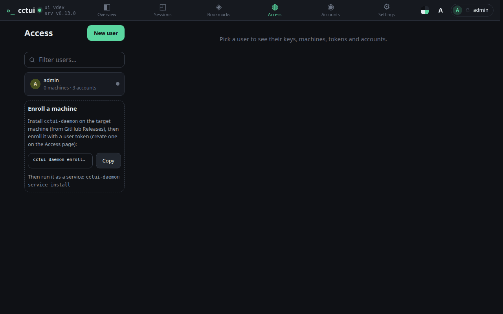
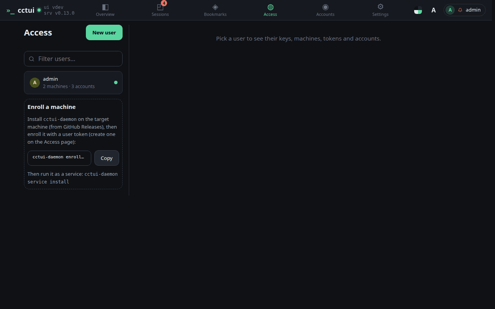
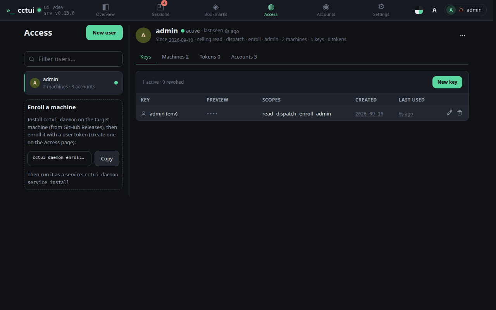
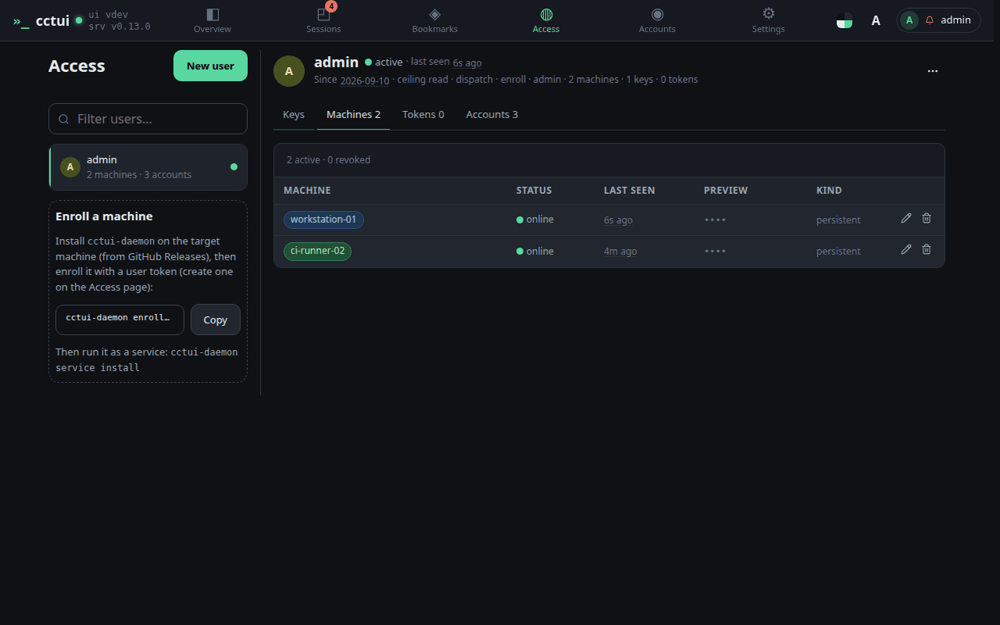
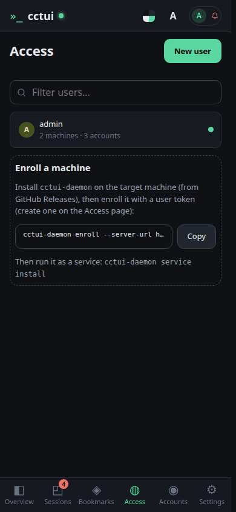
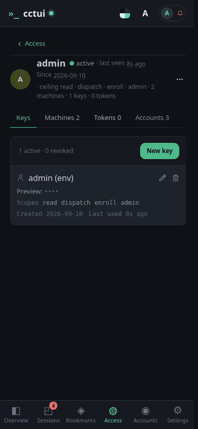
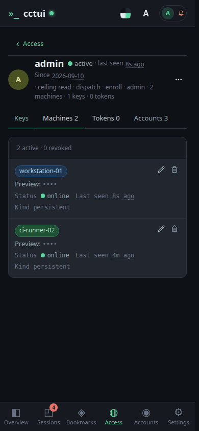

Start here: enroll a machine Access lists everyone and everything that can act on this instance. Until a machine has enrolled, this card is the only thing here that matters.

What this command does It points the daemon at this server and registers the machine under your user. Swap the token placeholder for one of your own keys — that token is what ties the machine to you.

Waiting for the machine to report in The guide moves on by itself the moment the machine checks in. If you would rather finish setting it up later, leave this step and come back — nothing is lost.

Open your own user Everything attached to an identity is here: the keys it signs in with, the machines it enrolled, its tokens and its AI accounts.

The machines that answered The machine you just enrolled is listed here with its heartbeat. Online means it can host a session right now.
viewport=mobile theme=dark
Start here: enroll a machine Access lists everyone and everything that can act on this instance. Until a machine has enrolled, this card is the only thing here that matters.

What this command does It points the daemon at this server and registers the machine under your user. Swap the token placeholder for one of your own keys — that token is what ties the machine to you.Waiting for the machine to report in The guide moves on by itself the moment the machine checks in. If you would rather finish setting it up later, leave this step and come back — nothing is lost.

Open your own user Everything attached to an identity is here: the keys it signs in with, the machines it enrolled, its tokens and its AI accounts.

The machines that answered The machine you just enrolled is listed here with its heartbeat. Online means it can host a session right now.